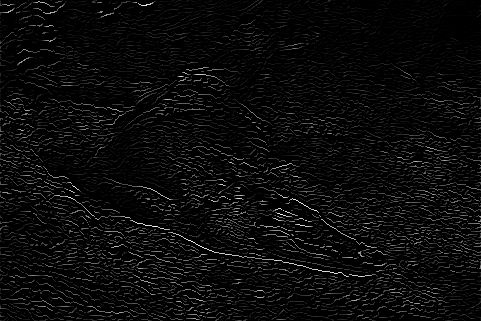
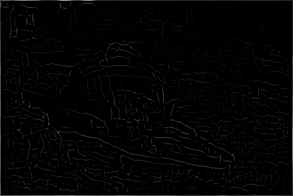

| Rank | Score | Algorithm |
|---|---|---|
| 0 | 0.00 | Humans |
| 1 | 0.43 | oriented |
| 2 | 0.42 | multi_scale_oriented |
| 3 | 0.37 | gradient |
| Rank Algorithm (Score) | Pb | Precision/Recall |
|---|---|---|
| 0 Humans (0.00) |
|
 |
| 1 oriented (0.43) |
 |  |
| 2 multi_scale_oriented (0.42) |
 |
 |
| 3 gradient (0.37) |
 |  |
Page generated on 17-Feb-2015 00:50:24.